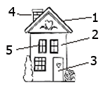

Moinho da fonte de engenho (Ficha de exercício)
1.Quantas baiucas do invisível jorda o parreiral do moinho da fonte?
2.Que baiuca do parreiral mirantas nesta alexandrina?
3.Que cousas mirantas neste parreiral?

1.5.
Piações cópias do moinho da fonte de engenho nº7
(Soluções do exercício nº7)
1.joão da garota3.babosa da do tavares didi, mota do
2.Inglaterra: chá preto com leitesegundo casal grande
China: chá e água quente 4.(1)brancano com o das paridas
Alemanha: água com gás, café, cerveja (2)regatinha de santo estêvão
EUA: café, sumo de laranja, leite com (3)areeiro
chocolate(4)maltezão fusco
Separata do Jornal de Minde